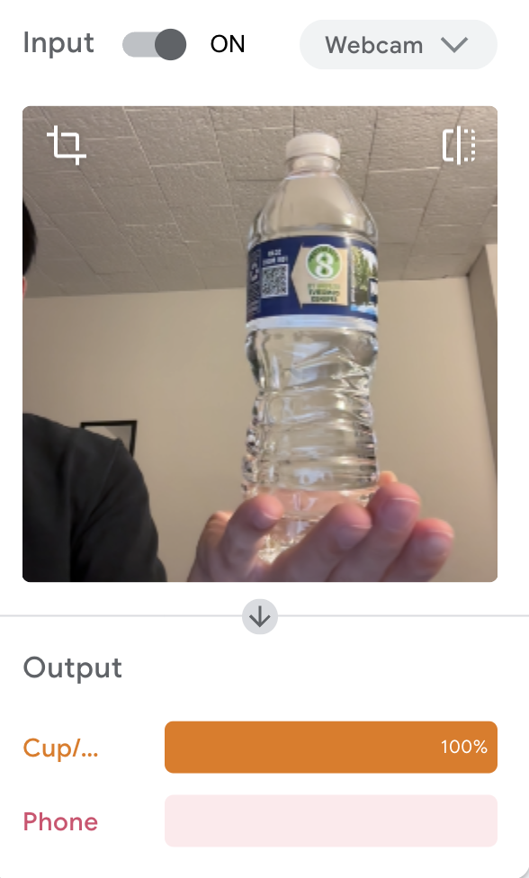
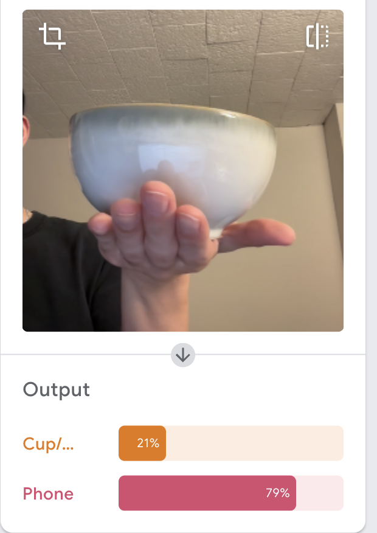

Can AI Recognize Everything?
We trained an AI model to recognize cups, glasses, and phones. Now we want to see how well it works with objects it has never seen before.
Try our AI model and see if you can fool it!
1. Test Our AI
Click Start Camera and show a cup, glass, or phone. See if the AI can recognize it correctly.
Camera is off.
What Does the AI Think?
Start the camera to see the results.
Cup / Glass: 0%
Phone: 0%
Keep in mind: Even if the AI shows 99% confidence, that doesn't mean its answer is correct.
2. Can You Fool the AI?
Try these challenges and see when the AI makes mistakes.
Challenge 1: Different Lighting
Show a cup in a bright room, then try it in a darker room. Does the AI still recognize it?
Challenge 2: Different Backgrounds
Put the same object in front of a different background. Does the prediction change?
Challenge 3: Something New
Show the AI something that isn't a cup or phone, like a notebook or keyboard. What does it predict?
3. Our Test Results
We tested three objects that were not part of our training categories. Here is what happened.
Test 1: Orange Ball

The AI predicted Phone with 94% confidence. Even though it was a ball, the AI still classified it as a phone.
Test 2: Water Bottle

The AI predicted Cup/Glass with 100% confidence. The bottle was not one of our training categories, but the AI still gave a confident answer.
Test 3: Ceramic Bowl

The AI predicted Phone with 79% confidence. We found this surprising because the bowl looks more like a cup than a phone.
What We Learned
Our AI always tries to choose between Cup/Glass and Phone, even when the object is neither. This shows that a high confidence score does not always mean the AI is correct.
4. AI Demonstration Video
Watch our demonstration of the AI model as we test different objects and see how it classifies them.
In our demonstration video, we tested four different objects to see how our AI model would classify them. First, we tested a phone, and the model was split between Cup/Glass and Phone, giving each category about 50% confidence. Next, we tested a remote, which the AI classified as a phone. The tennis ball was incorrectly classified as a cup, while the water bottle was also classified as a cup. These results showed us that our model can struggle with objects outside its training categories. Even when the AI makes a prediction, it does not always mean that the prediction is correct.
5. About Our Project
Our AI Model
View our Teachable Machine model
Project Resources
View our training dataset (2039 images)
Project Statement: Can You Fool AI?
Introduction
For Project 3, we created BLINDSPOT, an interactive website where people can test an AI image classification model. We used Google Teachable Machine to train our AI to recognize two categories: Cup/Glass and Phone. People can test the model using their webcams and see how it responds to different objects. We wanted to see how our training pictures affected the AI's predictions and how it would respond to unfamiliar objects.
Our main research question was: What happens when an AI model sees an object outside its training categories? We were also interested in whether the model would give a high confidence score even when neither category was correct.
We chose cups, glasses, and phones because they were easy to find and photograph. This gave us enough pictures to train the model and more time to experiment with its predictions. Our project also connects to Joy Buolamwini's Unmasking AI and Judy Wajcman's Feminist Theories of Technology. Both readings made us think about how human decisions shape technology and how those decisions can affect its results.
Building and Training Our Model
We used Google Teachable Machine to create our AI model. The tool allowed us to upload our own pictures and train the model using the examples we collected. We started by creating two classes called Cup/Glass and Phone. Both of us collected original pictures using our webcams. We moved the objects around while taking pictures to capture different angles and distances. This gave the model more examples of what each object could look like.
After collecting our pictures separately, we combined them into one Teachable Machine project. Our saved dataset contained 912 images in the Cup/Glass class and 1127 images in the Phone class, giving us 2039 images in total. Once the pictures were organized, we trained our model and tested it using the webcam preview. We could then see how the AI classified different objects and how confident it was in each prediction. For example, taking pictures of a phone from only one angle might make it harder for the model to recognize the same phone from another angle.
Building the Website
After training our model, we exported it using the TensorFlow.js option in Teachable Machine. We then created a new webpage called BLINDSPOT on our existing LIS 500 website. We used HTML and CSS to build the page and JavaScript to connect our trained model. We hosted the website through GitHub Pages so people could access and test it online.
We wanted people to be able to test our AI even if they had no experience with coding. Visitors can click Start Camera and show different objects to their webcams. The website displays the model's prediction and confidence percentages for Cup/Glass and Phone. We also added confidence bars so people can compare the results more easily.
We included a section called “Challenge the AI” where visitors can try different lighting conditions, distances, backgrounds, and unfamiliar objects. We also shared screenshots of our own tests so people could compare their results with ours. We wanted visitors to try the model for themselves and see whether they could find mistakes that we had not discovered during training.
Testing Our Model
After training our AI, we tested it using the webcam. We started with a cup, and the model correctly predicted Cup/Glass with 100% confidence. We then decided to test objects outside our training categories to see how the AI would respond. We chose an orange ball, a plastic water bottle, and a ceramic bowl because none of them belonged to our two categories.
Test 1: Orange Ball
For our first test, we held an orange ball in front of the camera. The model predicted Phone with 94% confidence and Cup/Glass with 6%. We expected the AI to have trouble recognizing the ball, but we were surprised that it classified the object as Phone with very high confidence. This made us question what the confidence score actually tells us about a prediction.
Test 2: Plastic Water Bottle
For our second test, we used a plastic water bottle. The model predicted Cup/Glass with 100% confidence and Phone with 0%. This result made more sense to us because bottles and cups are both used for drinking. However, we never created a separate category for bottles. We can't tell exactly why the model chose Cup/Glass, but it may have recognized visual patterns similar to those in our training pictures.
Test 3: Ceramic Bowl
For our third test, we showed the AI a ceramic bowl. The model predicted Phone with 79% confidence and Cup/Glass with 21%. This was probably our most surprising result because we expected the bowl to be classified as Cup/Glass. We thought the bowl looked more like a cup than a phone, but the AI predicted Phone instead. We can't explain the exact reason for this prediction based on one test. We would need to try more bowls and different camera angles to see whether the results stay consistent.
What Our Results Tell Us
Our tests showed us that the AI will still make a prediction even when an object does not belong to either of its training categories. Since we only trained our model to recognize Cup/Glass and Phone, it had no option to identify an unfamiliar object. This explains why the model classified an orange ball as Phone and a ceramic bowl as Phone, even though both answers were wrong.
We also realized that confidence scores can be misleading. For example, the orange ball received a 94% confidence score for Phone, but this doesn't mean there was a 94% chance that the ball was actually a phone. The score only tells us how strongly the model chose one category over the other. This matters because people might see a high percentage and assume that the AI is accurate.
Connection to Unmasking AI
Joy Buolamwini's Unmasking AI helped us think more about how human decisions affect the way AI systems work. Early in the book, Buolamwini describes her experience with the Aspire Mirror project. The software struggled to detect her face, but it could detect a white mask. This experience made her question why the technology worked differently depending on who was using it. Our project focuses on everyday objects, but we also saw how the decisions we made during development affected our model's predictions.
The Coded Gaze
Buolamwini introduces the idea of the “coded gaze,” which describes how developers' assumptions and priorities can affect technology. She explains that it involves "the priorities, preferences, and prejudices of those who have the power to shape technology" (Buolamwini).
This made us think about how much control we had when designing BLINDSPOT. We decided what the AI would recognize by choosing its training categories. We also selected the pictures used to train the model. The model didn't make these decisions on its own. For example, we could have included a third category called “Other,” but we only created Cup/Glass and Phone. This meant the AI had to choose between those two categories even when both answers were wrong.
What interested us was that the model could work exactly as we designed it and still produce incorrect results. The issue was not necessarily a coding error because we had already limited the possible answers before training started. This made us realize that some AI problems can come from the decisions developers make, even when the model is working as intended.
Chapter 5: Defaults Are Not Neutral
In Chapter 5, Buolamwini discusses how early camera technology used standards that worked better for lighter skin. For example, the Shirley card originally used a white woman as the standard for adjusting film exposure. This caused problems when photographing people with darker skin. Buolamwini writes, “Default settings are not neutral” (Buolamwini).
This chapter made us think more about the pictures we used to train our model. All of our pictures were collected using our own webcams, so the model learned from the camera conditions we had at the time. For example, the lighting and background in our rooms might have affected what the AI learned about cups and phones.
Looking back at our dataset, we realized that having a large number of pictures doesn't mean we included enough variety. Most of our images came from objects we already owned. For example, taking hundreds of pictures of the same cup might help the AI recognize that cup, but it doesn't guarantee that the model will recognize a glass with a different shape. This made us realize that we should pay more attention to what our training pictures actually represent instead of focusing mainly on how many pictures we collected.
Chapter 8: Power Shadows
In Chapter 8, Buolamwini discusses how researchers evaluate AI systems and why the results can be misleading when the testing data does not represent everyone. When examining benchmark datasets, she asks which groups were included and, “just as important, which groups were excluded?” (Buolamwini). Her research revealed that a model could receive a high overall accuracy score even when it performed poorly for certain groups.
Buolamwini's research also shows why intersectionality matters when evaluating AI. She found that some facial analysis systems performed much better for lighter-skinned men than darker-skinned women. Looking at race or gender separately would not fully show these differences. This also connects to implicit bias because developers may make assumptions without realizing it. In our project, we assumed that the pictures we collected would be enough to train the model, but we didn't think carefully about how much variety our dataset actually had. Unlike these systems, BLINDSPOT classifies objects rather than people, so we can't directly measure these types of discrimination in our project.
This made us question how we were measuring the success of our own model. When we tested BLINDSPOT, we mainly looked at the prediction and its confidence score. For example, when the AI classified a cup with 100% confidence, we considered it a successful result. However, we never calculated how often the model made correct predictions in all our tests. A high confidence score from one prediction doesn't tell us the model's overall accuracy.
Another issue is that we didn't use the same testing method. We tested different objects and observed their predictions, but we didn't record enough results to compare how often the model was correct for each category. A better approach would be to prepare a separate set of test images and record every prediction. We could then calculate how often the AI correctly identifies cups and phones.
Buolamwini's research also made us think about what happens when certain cases are left out of testing. If we only measure how well our AI recognizes cups and phones, we won't learn much about how it responds to unfamiliar objects. We think these results should be reported separately because they show different limitations of the model. This would give people a clearer understanding of what BLINDSPOT can actually do.
Connection to Judy Wajcman
Judy Wajcman's Feminist Theories of Technology discusses how technology can be shaped by the people who use it. She explains that technology is “also shaped or reconfigured at the multiple points of consumption and use” (149). Wajcman discusses how gender and social relationships shape technology, but her argument also made us think about the relationship between developers and users. This made us think about the feedback we received after sharing BLINDSPOT with our discussion group.
When we first created the website, we mainly focused on getting the model to work and allowing people to test different objects. However, our classmates approached the project differently. Some suggested testing the front and back of a phone, while others wanted to see how the model would respond to different types of glasses. These suggestions gave us ideas that we had not considered when developing the project.
Wajcman's argument helped us see that users can influence how technology develops. Our classmates' feedback showed us why it's important to consider how other people use the website instead of only thinking about our own experience.
What We Learned
If we had the chance to do this project again, we would change how we planned our experiments. We spent most of our time collecting pictures and getting the model to work. Looking back, we should have decided how to test its accuracy before training it. This would have helped us compare our results more carefully instead of relying on a few examples.
We also think adding a third category called “Other” would be worth trying. We could train it using objects that are neither cups nor phones, then compare the new model with our original version. This would help us see whether adding another category actually improves the predictions. However, we can't assume it would solve every problem.
Conclusion
At first, we mainly wanted to create a model that could recognize cups and phones. As we continued testing, we became more interested in its mistakes and what caused them. We found that getting the AI to work was only part of the project. We also needed to question how reliable its predictions were.
The course readings helped us look at our project from different perspectives. Buolamwini's work showed us why the design and evaluation of AI systems matter, and Wajcman's article made us think about how users can influence technology. Our project is much simpler than the issues discussed in these readings, but it gave us a chance to apply their ideas to something we created ourselves.
In the end, we learned that building a working AI model doesn't mean building a reliable one. We need to pay attention to its limitations and be careful about the conclusions we draw from its predictions.
Works Cited
Buolamwini, Joy. Unmasking AI: My Mission to Protect What Is Human in a World of Machines. Random House, 2023.
Wajcman, Judy. “Feminist Theories of Technology.” Cambridge Journal of Economics, vol. 34, no. 1, 2010, pp. 143–152. https://doi.org/10.1093/cje/ben057.